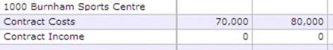
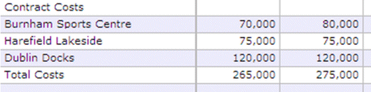
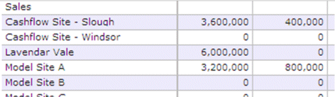
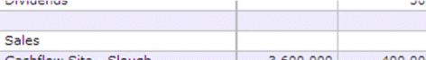
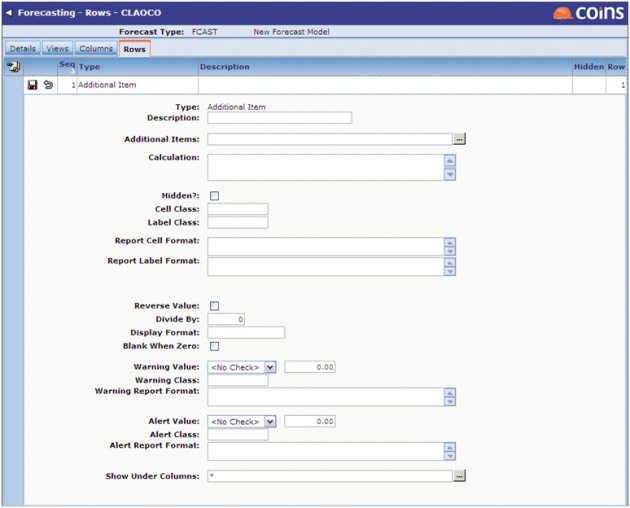

To add a new row:
- Choose the view to which they belong from the Selectors filter at the bottom of the screen.
- Use the Add Type drop-down to choose the Type of row to be included, then click
 . The available types are:
. The available types are:
Row Type Description Additional Item A single row configured to display values for a can-do list of additional items. When configuring a forecast, repeated Additional Item rows can be used to present individual items one at a time or a set of items can be summar
Brought Forward Value A single row configured to display brought forward values. A block of multiple rows per
For example, a breakdown of costs and income per
A block of records presenting one line per For example, total costs across all included
Site Multiple Detail Block A block of multiple rows per For example, a breakdown of a selected set of costs per site could be configured:

Site Single Detail Block A block of records presenting one line per For example, sales across all included current and model sites could be configured to display thus:

Subtotal Line A single row configured to display subtotal values. Text Line A single row configured to display a manually-labelled line, often as a break in the display (for ease of viewing) or to introduce a subheading, for example: 
As with column configuration, the majority of the fields to be filled in when creating a new record are approximately the same, regardless of the type of row selected.
Below is an example of the Additional Item fields:
